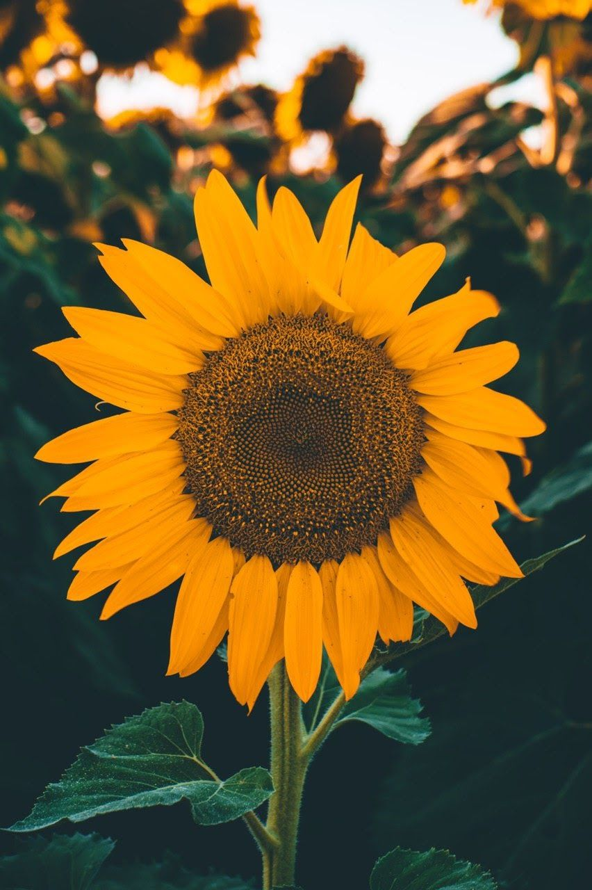

Cultivo de plantas: Girassol
Materiais necessários
- Vaso de 20cm a 30cm com furos na base
- Terra vegetal rica em matéria orgânica, misturada com vermiculita ou areia.
- Mantenha o solo úmido, mas não encharcado.
- O girassol precisa de pelo menos 4 a 6 horas de sol direto por dia
Passo a passo do plantio
- Decida entre girassol anão (para vasos) ou alto (para jardim). Escolha um local que receba muito sol direto.
- Escolha um vaso com furos de drenagem, coloque pedras ou argila expandida no fundo e use substrato rico em matéria orgânica.
- Cave covas com 2 a 5 cm de profundidade. Coloque 2 a 3 sementes por cova para garantir a germinação.
- Deixe 15 cm entre as plantas para girassóis anões e até 50 cm para os altos.
- Regue logo após o plantio, mantendo o solo úmido, mas não encharcado, nos primeiros 10-15 dias.
Foto da Planta
